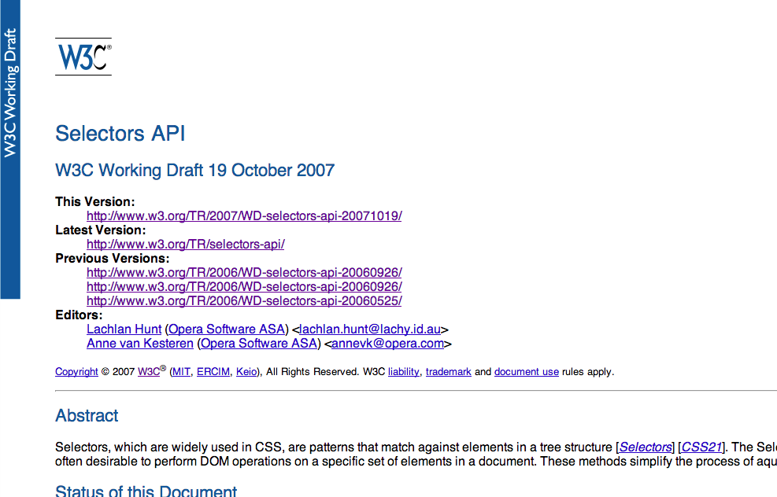
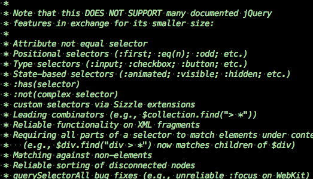

Just kidding, the History of Selectors
- (1996) CSS 1.0
- (2004-2011) CSS 2.1
- ~(1999-2012) CSS 3 Modules
- ~(2011-present) CSS 4
CSS Selectors in Javascript
 ### Simon Willison's getElementsBySelector
(3/25/03)
```js
function getAllChildren(e) {
// Returns all children of element. Workaround required for IE5/Windows. Ugh.
return e.all ? e.all : e.getElementsByTagName('*');
}
document.getElementsBySelector = function(selector) {
// Attempt to fail gracefully in lesser browsers
if (!document.getElementsByTagName) {
return new Array();
}
// Split selector in to tokens
var tokens = selector.split(' ');
var currentContext = new Array(document);
for (var i = 0; i < tokens.length; i++) {
token = tokens[i].replace(/^\s+/,'').replace(/\s+$/,'');
```
### cssQuery 1.0 && 2.0
(4/10/04 && 8/19/05)
```js
var cssQuery = function() {
// constants
var STANDARD_SELECT = /^[^>\+~\s]/;
var STREAM = /[\s>\+~:@\*#\.]|[^\s>\+~:@\*#\.]+/g;
var NAMESPACE = /\|/;
var IMPLIED_SELECTOR = /([\s>\+~\,]|^)([\.:#@])/g;
var ASTERISK ="$1*$2";
var QUOTED = /([\'\"])[^\1]*\1/;
var WHITESPACE = /^\s+|\s*([\+\,>\s;:])\s*|\s+$/g;
var TRIM = "$1";
var NODE_ELEMENT = 1;
var NODE_TEXT = 3;
```
### jQuery
(1/14/06)
```js
jQuery.g = {
"": "m[2]== '*'||a.nodeName.toUpperCase()==m[2].toUpperCase()",
"#": "a.getAttribute('id')&&a.getAttribute('id')==m[2]",
":": {
lt: "im[3]-0",
nth: "m[3]-0==i",
eq: "m[3]-0==i",
first: "i==0",
last: "i==r.length-1",
even: "i%2==0",
odd: "i%2==1",
"first-child": "jQuery.sibling(a,0).cur",
```
### Prototype
(1/18/06)
```js
var Selector = Class.create();
Selector.prototype = {
initialize: function(expression) {
this.params = {classNames: []};
this.expression = expression.toString().strip();
this.parseExpression();
this.compileMatcher();
},
parseExpression: function() {
function abort(message) { throw 'Parse error in selector: ' + message; }
```
### moo.dom
(4/4/06)
```js
getElementsBySelector: function(filter){
if (!filter) filter = null;
var elements = [];
this.split(',').each(function(selector){
elmnts = selector.replace(/^\s*|\s*$/g,"").getElements(filter);
elmnts.each(function(el){
elements.push(el);
});
});
```
### Simon Willison's getElementsBySelector
(3/25/03)
```js
function getAllChildren(e) {
// Returns all children of element. Workaround required for IE5/Windows. Ugh.
return e.all ? e.all : e.getElementsByTagName('*');
}
document.getElementsBySelector = function(selector) {
// Attempt to fail gracefully in lesser browsers
if (!document.getElementsByTagName) {
return new Array();
}
// Split selector in to tokens
var tokens = selector.split(' ');
var currentContext = new Array(document);
for (var i = 0; i < tokens.length; i++) {
token = tokens[i].replace(/^\s+/,'').replace(/\s+$/,'');
```
### cssQuery 1.0 && 2.0
(4/10/04 && 8/19/05)
```js
var cssQuery = function() {
// constants
var STANDARD_SELECT = /^[^>\+~\s]/;
var STREAM = /[\s>\+~:@\*#\.]|[^\s>\+~:@\*#\.]+/g;
var NAMESPACE = /\|/;
var IMPLIED_SELECTOR = /([\s>\+~\,]|^)([\.:#@])/g;
var ASTERISK ="$1*$2";
var QUOTED = /([\'\"])[^\1]*\1/;
var WHITESPACE = /^\s+|\s*([\+\,>\s;:])\s*|\s+$/g;
var TRIM = "$1";
var NODE_ELEMENT = 1;
var NODE_TEXT = 3;
```
### jQuery
(1/14/06)
```js
jQuery.g = {
"": "m[2]== '*'||a.nodeName.toUpperCase()==m[2].toUpperCase()",
"#": "a.getAttribute('id')&&a.getAttribute('id')==m[2]",
":": {
lt: "im[3]-0",
nth: "m[3]-0==i",
eq: "m[3]-0==i",
first: "i==0",
last: "i==r.length-1",
even: "i%2==0",
odd: "i%2==1",
"first-child": "jQuery.sibling(a,0).cur",
```
### Prototype
(1/18/06)
```js
var Selector = Class.create();
Selector.prototype = {
initialize: function(expression) {
this.params = {classNames: []};
this.expression = expression.toString().strip();
this.parseExpression();
this.compileMatcher();
},
parseExpression: function() {
function abort(message) { throw 'Parse error in selector: ' + message; }
```
### moo.dom
(4/4/06)
```js
getElementsBySelector: function(filter){
if (!filter) filter = null;
var elements = [];
this.split(',').each(function(selector){
elmnts = selector.replace(/^\s*|\s*$/g,"").getElements(filter);
elmnts.each(function(el){
elements.push(el);
});
});
```
Game changer: querySelectorAll

WTF Sizzle? Why-how?
Can't I just use querySelectorAll?
WARNING

* use of this product may cause serious injury or even death
“This is completely unacceptable. Not only is it not intuitive (finding elements that don’t match
the correct expression) but it goes against what every single JavaScript library provides.”
- John Resig
This is a spec bug.
- Alex Russell (creator of Dojo’s selector engine)
## The scoped attribute
Brings the concept of scope to CSS
```html
<style scoped>
ul li { background: blue; }
</style>
```
Selectors Level 4 Highlights
## `:matches()`
```css
/* this */
a:link, a:visited, a:hover, a:active { color: red; }
/* becomes this */
a:matches(:link, :visited, :hover, :active) { color: red; }
/* and more... */
input:matches(:target, :focus)
div:matches(.animated, .visible, #main)
```
## Reference combinators `/attr/`
```css
label:matches(:hover, :focus) /for/ input
#post5:hover /data-ad/ aside { text-shadow: black 0 0 20px; }
```
## case-insensitive attributes
```css
.superman[data-power='flying' i]
```
## :any-link && :local-link
```css
:any-link { color: blue; }
:local-link { color: green; }
/* pass the number of levels in the path */
:local-link(1) { color: orange; } /* http://jquery.com/download/ */
:local-link(3) { color: red; } /* http://jquery.com/download/more/stuff/ */
```
## :blank
Excludes whitespace
```
<p> </p> <!-- ← Does not match :empty -->
```
### :nth[-last]-match(An+B of selector)
```css
/* huge! */
p.foo:nth-match(even)
option:nth-match(-1n+4 of :selected) /* first four */
```
## Subject selector
```html
<nav>
<ul>
<li><a href="#">One</a></li>
<li><a href="#">Two</a></li>
<li><a href="#">Three</a></li>
</ul>
</nav>
```
```css
/* Sets the background of the list element */
nav > ul > !li > a:hover { background: gray; }
/* Adds shadow to the ul */
nav > !ul > li > a:hover { box-shadow: 0 0 10px black; }
```
## Back to `:scope`
```html
<article id="outside-scope"></article>
<section>
<style scoped>
/* will not match #outside-scope */
article { background: green; }
/* same as */
:scope article { background: green; }
</style>
<article id="inside-scope"></article>
</section>
```
Javascript
```js
el.querySelectorAll(':scope body ul a').length; // => 0 yay!
```
## Limited to descendants _only_
```js
elem.querySelectorAll(":scope + div");
```
This doesn't return anything.
The New Sizzle
jQuery.find = function( selector, context ) {
return context.findAll( selector );
}

“Everything after this is just gravy.”
- John